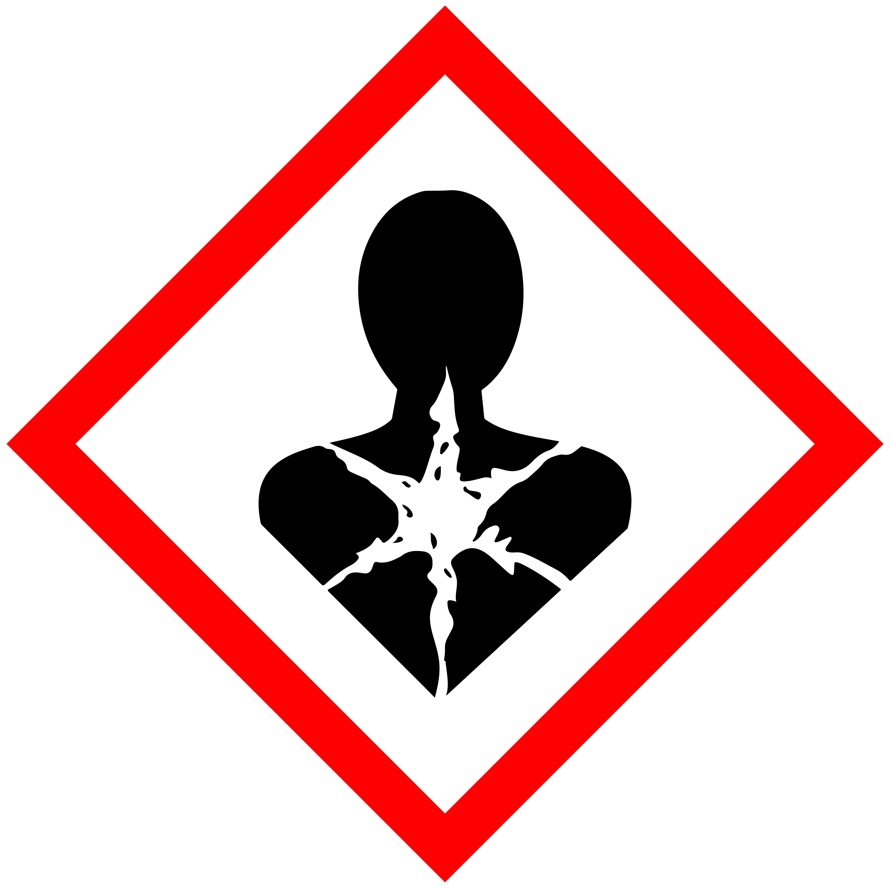
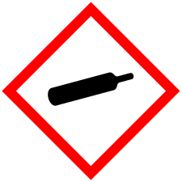
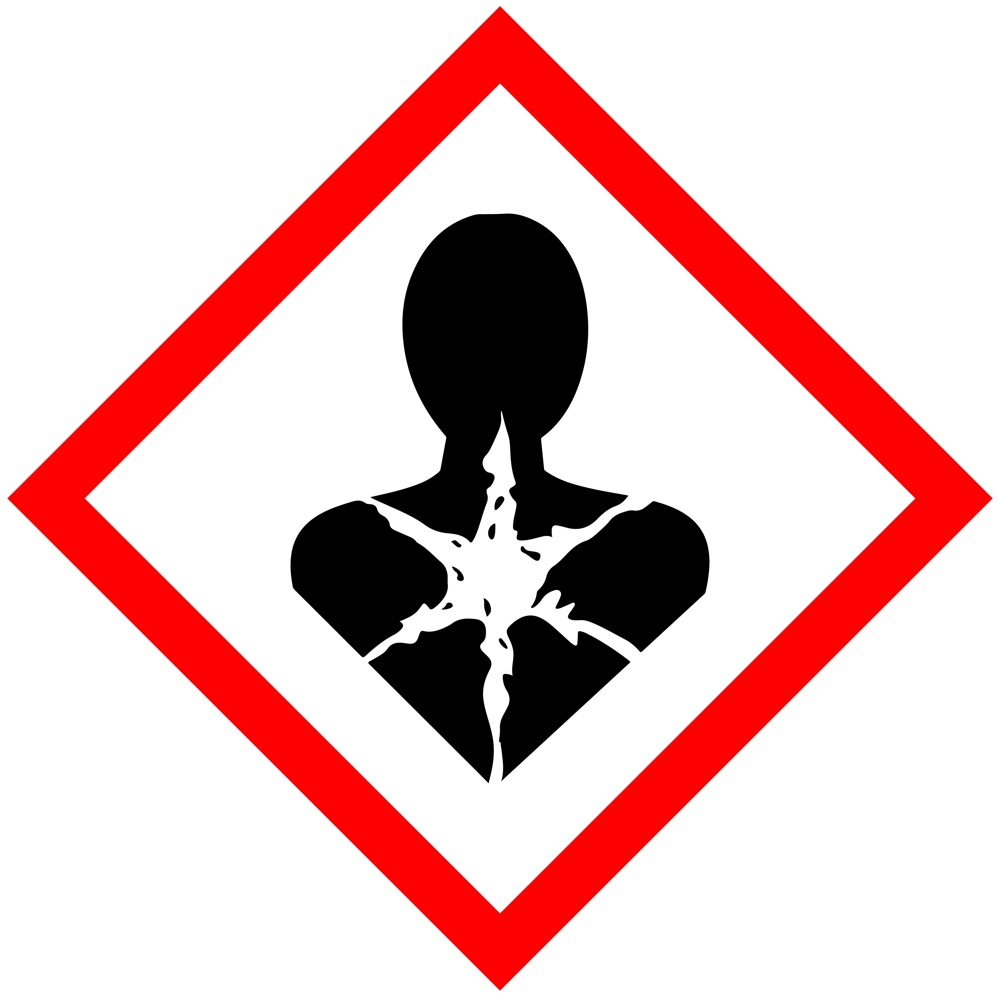
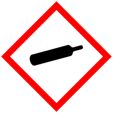

จะเป็นอะไรไหม?
ถ้าหากอยู่กับสารพิษเหล่านี้เป็นเวลานาน

ผลต่อตา
เกิดอาการระคายเคือง แสบตา เยื่อยุตาอักเสบ
ตาพร่ามัว น้ำตาไหลและอาจตาบอดได้ถ้ารับ
สารในปริมาณมาก เช่น เมธานอล
ผลต่อระบบทางเดินหายใจ
ระบบทางเดินหายใจซึ่งเป็นทางผ่านของ
ก๊าซไอระเหย ฝุ่นละอองของสารพิษ
ทำให้เกิดความระคายเคืองต่อระบบทางเดิน
หายใจในส่วนต้น ทำลายเนื้อเยื่อปอด ทำลายความยืดหยุ่นปอด
เกิดการแพ้สาร หรือเกิดมะเร็งหากสัมผัสสารอย่างต่อเนื่อง
ซ้ำ ๆ เป็นเวลานาน เช่น มะเร็งปอด มะเร็งโพรงจมูก เป็นต้น
ผลต่อผิวหนัง
เกิดการระคายเคืองขั้นต้น เกิดการแพ้แสง
ทำลายผิวหนังอย่างถาวร เกิดมะเร็งผิวหนัง
ผลต่ออวัยวะภายใน
ตับ : แบบเฉียบพลัน (เซลล์ตาย) แบบเรื้อรัง (ตับแข็ง มะเร็ง)
สารที่เป็นพิษต่อตับ เช่น คาร์บอนเตตระคลอไรด์ คลอโรฟอร์ม
ไต : สารที่เป็นพิษต่อไต เช่น โลหะหนัก คาร์บอนไดซัลไฟด์
เลือด : กระทบต่อระบบการการสร้างเม็ดเลือด (ไขกระดูก)
องค์ประกอบของเลือด (เกล็ดเลือด เม็ดเลือดแดง เม็ดเลือดขาว)
หรือความสามารถในการขนส่งออกซิเจน
ของเซลล์เม็ดเลือด สารที่เป็นพิษต่อเลือด เช่น เบนซิน กัมมันตรังสี
ม้าม : สารที่เป็นพิษต่อม้าม เช่น คลอโรฟีน ไนโตรเบนซิน
ระบบสืบพันธ์ุ : เป็นหมัน อสุจิผิดปกติ มีอสุจิน้อย
ระบบฮอร์โมนทำงานผิดปกติ สารที่เป็นพิษต่อระบบสืบพันธ์ เช่น
โลหะหนักไดออกซิน